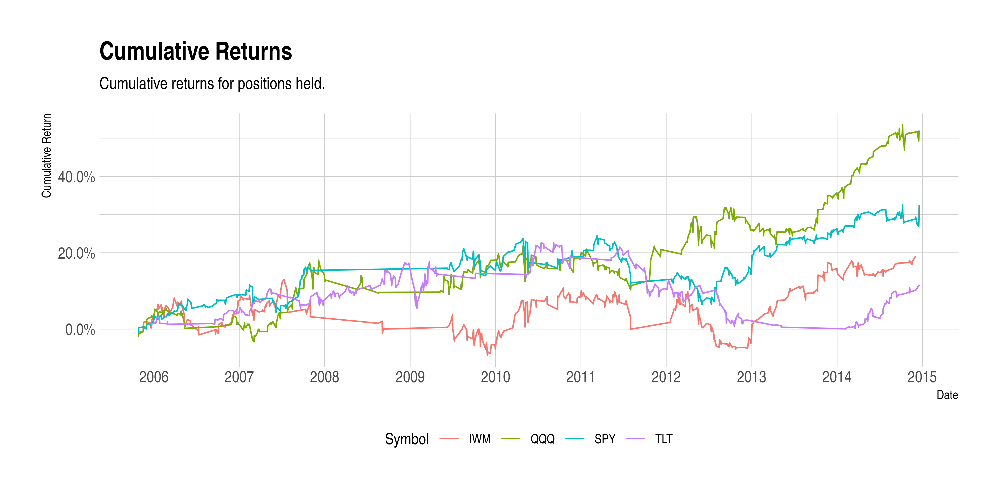
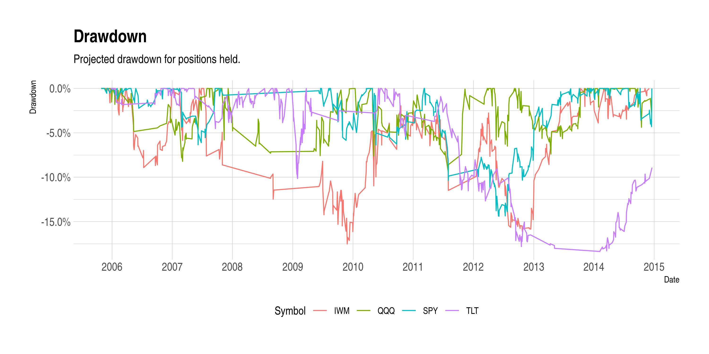

Last updated: 2019-02-26
Checks: 6 0
Knit directory: project/analysis/
This reproducible R Markdown analysis was created with workflowr (version 1.2.0). The Report tab describes the reproducibility checks that were applied when the results were created. The Past versions tab lists the development history.
Great! Since the R Markdown file has been committed to the Git repository, you know the exact version of the code that produced these results.
Great job! The global environment was empty. Objects defined in the global environment can affect the analysis in your R Markdown file in unknown ways. For reproduciblity it’s best to always run the code in an empty environment.
The command set.seed(20180909) was run prior to running the code in the R Markdown file. Setting a seed ensures that any results that rely on randomness, e.g. subsampling or permutations, are reproducible.
Great job! Recording the operating system, R version, and package versions is critical for reproducibility.
Nice! There were no cached chunks for this analysis, so you can be confident that you successfully produced the results during this run.
Great! You are using Git for version control. Tracking code development and connecting the code version to the results is critical for reproducibility. The version displayed above was the version of the Git repository at the time these results were generated.
Note that you need to be careful to ensure that all relevant files for the analysis have been committed to Git prior to generating the results (you can use wflow_publish or wflow_git_commit). workflowr only checks the R Markdown file, but you know if there are other scripts or data files that it depends on. Below is the status of the Git repository when the results were generated:
Ignored files:
Ignored: .RData
Ignored: .Rhistory
Ignored: .Rproj.user/
Ignored: docs/
Untracked files:
Untracked: data/blotter_bh.rda
Untracked: data/env_bh.rda
Untracked: data/instruments_bh.RData
Unstaged changes:
Modified: README.md
Modified: analysis/account_returns.Rmd
Modified: analysis/child/child_chart_reconcile.Rmd
Modified: code/05_strategy_buy_hold.R
Modified: data/instruments.RData
Modified: data/results.RData
Note that any generated files, e.g. HTML, png, CSS, etc., are not included in this status report because it is ok for generated content to have uncommitted changes.
These are the previous versions of the R Markdown and HTML files. If you’ve configured a remote Git repository (see ?wflow_git_remote), click on the hyperlinks in the table below to view them.
| File | Version | Author | Date | Message |
|---|---|---|---|---|
| Rmd | bd2d8f0 | Tim Trice | 2018-09-29 |
Refactor func load_data
|
| Rmd | 02e452c | Tim Trice | 2018-09-29 | Merge branch ‘master’ of gitlab.com:triceanalytics/finance/connors_rsi |
| Rmd | d10c78c | Tim Trice | 2018-09-28 | Refactor trade validations |
| Rmd | f29dee2 | Tim Trice | 2018-09-28 | Add tsibble, tidyfinance |
| Rmd | af4ed66 | Tim Trice | 2018-09-28 | Stop on error |
| Rmd | 340bf00 | Tim Trice | 2018-09-09 | Add exploratory script |
| Rmd | eefef8a | Tim Trice | 2018-09-09 | Ignore docs dir |
library(hrbrthemes)
library(skimr)
library(tidyfinance)
library(tidyquant)
library(tsibble)source(here::here("./code/02_settings.R"))\[ \text{BTO} = \text{Adjusted} > \text{SMA (200) } \& \text{ RSI (2)} < 5 \]
\[ \text{STC} = \text{Adjusted} < \text{SMA (200) } \vee \text{ Close} > \text{SMA (5)} \]
df <- tq_get(symbols, from = start_date, to = end_date)df <-
df %>%
group_by(symbol) %>%
arrange(date) %>%
tq_mutate(
select = adjusted,
mutate_fun = SMA,
n = 5L,
col_rename = "SMA5"
) %>%
tq_mutate(
select = adjusted,
mutate_fun = SMA,
n = 200L,
col_rename = "SMA200"
) %>%
tq_mutate(
select = adjusted,
mutate_fun = RSI,
n = 2L,
maType = SMA,
col_rename = "RSI2"
)df <-
df %>%
mutate(
rsi2_lt_5 = if_else(RSI2 < 5, TRUE, FALSE),
cl_gte_sma5 = if_else(adjusted >= SMA5, TRUE, FALSE),
cl_lt_sma200 = if_else(adjusted < SMA200, TRUE, FALSE),
#' Given signal, BTO on market close
bto = lag(rsi2_lt_5, n = 1L) & !lag(cl_lt_sma200, n = 1L),
#' Given signal, STC on market close
stc = lag(cl_lt_sma200, n = 1L) | lag(cl_gte_sma5, n = 1L),
#' If position is held, then TRUE. The lag is so that buy/hold positions are
#' not only for one day
position = case_when(
bto == TRUE ~ TRUE,
stc == TRUE & lag(bto, n = 1L) == TRUE ~ TRUE,
TRUE ~ FALSE
)
)x <- which(df$bto)
#' Validate signals meat trade requirements
x %>%
map_lgl(
.f = ~df$adjusted[(.x - 1)] > df$SMA200[(.x - 1)] & df$RSI2[(.x - 1)] < 5
) %>%
all()[1] TRUEdf_returns <-
df %>%
group_by(symbol) %>%
as_tbl_time(
key = id(symbol),
index = date
) %>%
calculate_return(adjusted)df_returns %>%
filter(position == TRUE) %>%
mutate(
cum_return = cumulative_return(adjusted_return)
) %>%
ggplot() +
aes(x = date, y = cum_return, color = symbol) +
geom_line() +
scale_x_date(
date_labels = "%Y",
date_breaks = "years",
date_minor_breaks = "years"
) +
scale_y_continuous(labels = scales::percent) +
guides(color = guide_legend(title = "Symbol")) +
theme_ipsum() +
theme(legend.position = "bottom") +
labs(
title = "Cumulative Returns",
subtitle = "Cumulative returns for positions held.",
x = "Date",
y = "Cumulative Return"
)
df_returns %>%
filter(position == TRUE) %>%
mutate(drawdown = drawdown(adjusted_return)) %>%
ggplot() +
aes(x = date, y = drawdown, color = symbol) +
geom_line() +
scale_x_date(
date_labels = "%Y",
date_breaks = "years",
date_minor_breaks = "years"
) +
scale_y_continuous(labels = scales::percent) +
guides(color = guide_legend(title = "Symbol")) +
theme_ipsum() +
theme(
legend.position = "bottom"
) +
labs(
title = "Drawdown",
subtitle = "Projected drawdown for positions held.",
x = "Date",
y = "Drawdown"
)
df_returns %>%
filter(position == TRUE) %>%
select(symbol, date, adjusted_return) %>%
mutate(
cum_return = cumulative_return(adjusted_return)
) %>%
group_by(date) %>%
summarise(daily_return = sum(cum_return, na.rm = TRUE)) %>%
complete(date = seq.Date(as.Date(start_date), as.Date(end_date), by = "day")) %>%
replace_na(list("daily_return" = 0)) %>%
mutate(cumsum = cumsum(daily_return)) %>%
ggplot() +
aes(x = date, y = cumsum) +
geom_line() +
scale_x_date(
date_labels = "%Y",
date_breaks = "years",
date_minor_breaks = "years"
) +
scale_y_continuous(labels = function(x) paste0(x, "%")) +
theme_ipsum() +
labs(
title = "Projected Equity Curve",
x = "Date",
y = "Cumulative Return"
)
sessionInfo()R version 3.5.2 (2018-12-20)
Platform: x86_64-pc-linux-gnu (64-bit)
Running under: Ubuntu 16.04.5 LTS
Matrix products: default
BLAS: /usr/lib/atlas-base/atlas/libblas.so.3.0
LAPACK: /usr/lib/atlas-base/atlas/liblapack.so.3.0
locale:
[1] LC_CTYPE=C.UTF-8 LC_NUMERIC=C LC_TIME=C.UTF-8
[4] LC_COLLATE=C.UTF-8 LC_MONETARY=C.UTF-8 LC_MESSAGES=C.UTF-8
[7] LC_PAPER=C.UTF-8 LC_NAME=C LC_ADDRESS=C
[10] LC_TELEPHONE=C LC_MEASUREMENT=C.UTF-8 LC_IDENTIFICATION=C
attached base packages:
[1] stats graphics grDevices utils datasets methods base
other attached packages:
[1] bindrcpp_0.2.2 tsibble_0.6.2
[3] tidyquant_0.5.5 forcats_0.3.0
[5] stringr_1.3.1 dplyr_0.7.8
[7] purrr_0.2.5 readr_1.3.1
[9] tidyr_0.8.2 tibble_1.4.2
[11] ggplot2_3.1.0 tidyverse_1.2.1
[13] quantmod_0.4-13 TTR_0.23-4
[15] PerformanceAnalytics_1.5.2 xts_0.11-2
[17] zoo_1.8-4 lubridate_1.7.4
[19] tidyfinance_0.0.0.9000 skimr_1.0.3
[21] hrbrthemes_0.5.0.1
loaded via a namespace (and not attached):
[1] httr_1.4.0 jsonlite_1.6 here_0.1 modelr_0.1.2
[5] assertthat_0.2.0 cellranger_1.1.0 yaml_2.2.0 Rttf2pt1_1.3.7
[9] pillar_1.3.1 backports_1.1.3 lattice_0.20-38 glue_1.3.0
[13] quadprog_1.5-5 extrafontdb_1.0 digest_0.6.18 rvest_0.3.2
[17] tibbletime_0.1.1 colorspace_1.3-2 htmltools_0.3.6 plyr_1.8.4
[21] pkgconfig_2.0.2 broom_0.5.1 haven_2.0.0 scales_1.0.0
[25] whisker_0.3-2 git2r_0.23.0 generics_0.0.2 withr_2.1.2
[29] lazyeval_0.2.1 cli_1.0.1 magrittr_1.5 crayon_1.3.4
[33] readxl_1.2.0 evaluate_0.12 fs_1.2.6 nlme_3.1-137
[37] xml2_1.2.0 tools_3.5.2 hms_0.4.2 munsell_0.5.0
[41] compiler_3.5.2 rlang_0.3.0.1 grid_3.5.2 rstudioapi_0.8
[45] timetk_0.1.1.1 labeling_0.3 rmarkdown_1.11 gtable_0.2.0
[49] curl_3.2 R6_2.3.0 knitr_1.21 extrafont_0.17
[53] bindr_0.1.1 workflowr_1.2.0 rprojroot_1.3-2 Quandl_2.9.1
[57] stringi_1.2.4 Rcpp_1.0.0 tidyselect_0.2.5 xfun_0.4